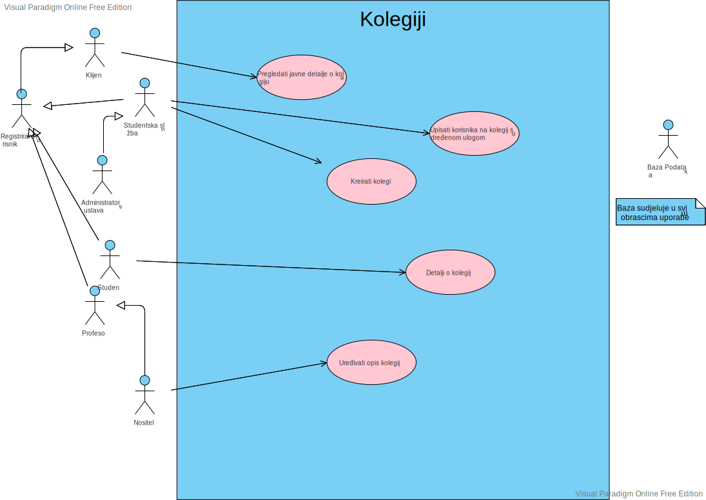
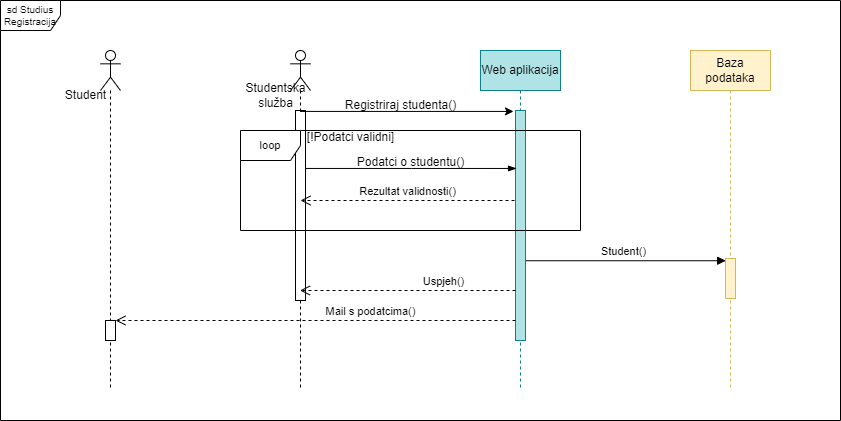

| Revizija | Opis promjene/dodatak | Autori | Datum |
|---|---|---|---|
| 0.1 | Napravljen predložak | Matija Fućek | 1.10.2022. |
| 0.1.1 | Dodan opis projektnog zadatka | Matija Fućek | 22.10.2022. |
| 0.1.2 | Dodani funkcionalni zahtjevi | Marko Supičić | 24.10.2022. |
| 0.2 | Napravljen predložak za bazu podataka | Marko Supičić | 28.10.2022. |
| 0.2.1 | Početna arhitektura i dizajn sustava | Marko Supičić, Matija Fuček | 29.10.2022. |
| 0.3 | Izmjena predloška baze | Cijeli tim | 4.11.2022 |
| 0.3.1 | Izrada obrazaca uporabe | Marko Supičić | 5.11.2022. |
| 0.3.2 | Dodani ostali zahtjevi | Hary Samardžić | 5.11.2022. |
| 0.3.3 | Izrada baze podataka | Matija Fuček | 7.11.2022. |
| 0.4 | Izrada 1 sekvencijskog dijagrama | Marko Supičić | 11.11.2022. |
| 0.4.1 | Dodani opisi obrazaca uporabe | Marko Supičić | 11.11.2022. |
| 0.5 | Odbačen stari sekvencijski dijagram i dodana 2 nova | Adrian Aničić | 6.12.2022. |
| 0.5.1 | Dodana 2 nova sekvencijska dijagrama | Franko Budimir | 6.12.2022. |
| 0.5.2 | Izrada dijagrama razreda | Luka Čulav, Hary Samardžić | 6.12.2022. |
| 0.5.3 | Prepravljena arhitektura i dizajn sustava | Matija Fuček | 6.12.2022. |
| 0.5.4 | Izmjena dijagrama obrazaca uporabe | Adrian Aničić | 6.12.2022. |
| 0.5.5 | Prepravljena baza podataka | Hary Samardžić | 6.12.2022. |
| 0.5.6 | Prepravljen opis obrazaca uporabe | Marko Supičić | 7.12.2022. |
| 0.6 | Prepravljena 2 sekvencijska dijagrama | Adrian Aničić | 9.12.2022. |
| 0.6.1 | Prepravljena 2 sekvencijska dijagrama | Franko Budimir | 9.12.2022. |
| 0.7 | Prepravljen dijagram razreda | Luka Čulav, Hary Samardžić | 12.12.2022. |
| 0.7 | Opis dijagrama razreda | Luka Čulav, Hary Samardžić | 12.12.2022. |
| 0.7.1 | Odbačen 1 stari i dodan 1 novi dijagram razreda | Franko Budimir | 14.12.2022 |
| 0.7.2 | dodan opis 1 sekvencijskog dijagrama | Adrian Aničić | 14.12.2022. |
| 0.7.3 | dodan opis 3 sekvencijska dijagrama | Franko Budimir | 14.12.2022. |
| 0.7.4 | Dnevnik izmjena projekta | Marko Supičić | 14.12.2022. |
| 0.7.5 | opis projektnog zadatka | Marko Supičić | 14.12.2022. |
| 0.7.6 | Zaključak i ostale sitnice | Marko Supičić | 14.12.2022. |
| 0.7.7 | Korištene tehnologije i alati | Matija Fuček | 14.12.2022. |
| 0.7.8 | Upute za puštanje u pogon | Matija Fuček | 14.12.2022. |
| 0.7.9 | Prikaz aktivnosti grupe | Cijeli tim | 15.12.2022. |
| 0.7.10 | Korigiranje teksta i provjera dokumentacije | Cijeli tim | 15.12.2022. |
| 0.8 | Izmjena raspisa baze, dijagrama baze i klasnog dijagrama podataka | Hary Samardžić | 13.1.2023. |
| 0.8.1 | Dodavanje dijagrama stanja, aktivnosti, razmještanja | Cijeli tim | 13.1.2023. |
| 0.8.2 | Dodavanje dijagrama komponenti | Matija Fućek | 14.1.2023. |
Okupljena je ekipa od sedmero visoko motivirana člana, od kojih svaki doprinosi svojim usmjerenjem tako da pokrivamo cjeloukupan stack potreban za razvoj platforme.
Projekt “Studius” je osmišljen kao platforma koja objedinjuje set alata potrebnih za rad proizvoljne obrazovne ustanove, prvenstveno fakulteta, na velikom broju studenata, kolegija i posebnih programa. Cilj projekta je kontribuirati boljem iskustvu svakog studenta i profesora diljem Sveučilišta. Posebno smo motivirani da omogućimo fakultetima pored FER-a kvalitetnije rješenje za upravljanje kolegijima i pružimo bolje načine komunikacije profesora i studenata. S obzirom da je to iznimno težak u dugotrajan proces u sklopu kolegija "programsko inženjerstvo" implementirat ćemo samo dio tog većeg projekta. Što ćemo i kako ćemo to implementirati opisano je u nastavku.
Naš sustav ima više uloga, početna uloga od koje sve kreće je klijent Prilikom pokretanja sustava klijentu prikazuju se log in forma s kojom se može prijaviti u sustav. Može se prijaviti putem korisničkih podataka uz korisničko ime i lozinku ili pomoću Google accounta. Ako se klijent želi prijaviti putem Google accounta on mora već biti registriran putem korisničkih podataka. Ova mjera služi kako se nebi svatko mogao registrirati u Studius i kako bi se korisnicima Studiusa ubrzala prijava. Pored log in forme ponuđena je tražilica za kolegije gdje se može pronaći određene kolegije. Na temelju korisnikovog upita sustav generira kolegije. Kad korisnik pronađe kolegij za koji je zainteresiran može kliknuti na njega i prikazat će mu se javni detalji o tom kolegiju. Na sličan način mogu se pretraživati i studenti, doktorandi i djelatnici fakulteta. Takodžer postoje mogućnosti odabira za globalne obavijesti, dakle obavijesti relevantne za cijeli fakultet. Uz to, moguć je i pregled nadolazećih seminara. Seminare su radovi o nekoj istraživačkoj temi i njih održavaju doktorandi. S obzirom da su ti radovi javni, svaki klijent može prisustvovati na njima ako želi. Na dalje, osim klijenta postoje uloge
Svaka od tih uloga ima iste mogućnosti kao i klijent uz još neke nadodane.
Na primjer, student može upisati dostupni kolegij uz dopuštenje studentske službe ili nositelja predmeta. Jednom kad upiše predmet može pregledati detaljnije obavijesti vezane uz kolegije na koje je upisan koje običan klijent ne može vidjeti. Takodžer mu se nudi i pregled detalja o kolegiju kojima bez prijave u sustav nebi imao pristup. Nakon studenta slijedi doktorand koji ima još neke mogućnosti koje student nema.
Doktorand kako bi uspješno položio neke predmete treba odrađivati seminare. Neke mora napraviti i održati sam, a na nekima mora samo prisustvovati. Teme za one koje planira održati može samoinicijativno smisliti i prijaviti pa ju kasnije mentor odobri ili odbije ovisno o tome je li relevantna za njegov predmet. Alternativno, može uzeti neku od tema koja je već predložena na tom predmetu od strane nositelja jer je relevantna za taj predmet.
S druge strane imamo fakultetsko osoblje koje čine: profesor, nositelj, studentska služba, administrator sustava. Profesor. može pregledati popis studenata i/ili doktoranada na predmetima kojima predaje, takodžer i njihove statistike ispita. Doktoranadima koje mentorira je zadužen za bilježenje evidencije dolaska, jer je svakom doktorandu propisan broj obaveznih dolaska na seminare drugih doktoranada. Osim toga zadužen je i za odobravanje tema seminara tim doktorandima ovisno o tome je li tema relevantna za njegov predmet
Nositelj na svojim predmetima postavlja je li kolegij dostupan za upisivanje. Na tim predmetima može i uređivati opis kolegija, posebno ako dođe do promjena kolegija. S obzirom da je glavni na predmetu zadužen je i za predlaganje tema seminara doktorandima na tom predmetu
Studentska služba ima pravo upravljati bazom, tu spada čitanje iz baze, pisanje u bazu, brisanje podataka u bazi i ažuriranje baze svih tablica osim mijenjanja uloge Uz to studentska služba je zadužena za kreiranje računa studentima, doktorandima, i zaposlenicima fakulteta. U aplikaciji nemamo registraciju jer se ona obavlja preko studentske službe, a podaci za prijavu moraju biti doneseni uživo. Prilikom izrade računa dužna je obavijestiti novoizrađenog korisnika mailom. Osim toga ima pravo i na kreiranje kolegija. Kad profesorsko vijeće osmisli novi predmet Studentska služba je ta koja će staviti podatke na stranicu fakulteta sa svim traženim podacima.
Administrator sustava Studentska služba ima skoro sve, ali zbog potreba sigurnosti treba rola jača od nje a to je administrator sustava. Samo jedan korisnik može imati ulogu administratora. Ta uloga ima sve mogućnosti kao i studentska služba uz dodatnu mogućnost promjene role korisnicima.
Poseban alat koji bi pretežno djelovao automatski, ali i uz mogućnost ručnih izmjena je alat za upravljanje korisnicima na razini samog sustava.
Neregistrirani korisnici bi imali uvid u javne informacije za svaki kolegij kao sto su opis predmeta, način bodovanja, popis profesora, asistenata i ostalih službenih sudionika.
Registrirani korisnici, kojima su dodijeljena prava dubljeg pregleda u kolegij, bi mogli prolaziti kroz sam sadržaj kolegija u obliku lekcija, materijala, te kvizova i zadataka za vježbu.
Posebno za svaki kolegij određuju se registrirani korisnici koji bi dobili ulogu Editora. Svaki editor bi mogao mijenjati javno dostupne stranice, te sam sadržaj lekcija unutar kolegija. Pored sadržaja, editori (ili potencijalno još neka visa rola) bi mogli mijenjati i samu listu registriranih korisnika kojima je dano pravo dubljeg pregleda.
Od profila korisnika do sadržaja lekcija unutar kolegija, sustav za sadržaj pobrinuo bi se da se diljem stranice sadržaj organizira na što pregledniji način, te bi olakšavao i pregled i uređivanje, naravno sa širokim mogućnostima proširenja kroz ekstenzije.
Neregistriranom korisniku prikazuje se naslovna stranica s osnovnim informacijama vezanim za sustav radnog imena "Studius". Isti se može prijaviti u sustav sa svojim korisničkim podacima.
Registracijom u sustav korisnik dobiva razinu prava određenu ulogom u sustavu. Postojat će uloge administratora, fakultetskog osoblja (nositelja kolegija, profesora te asistenata), upisanih studenata, posjetitelja I razvojnog tima.
Svaka od ovih uloga daje pristup određenim funkcionalnostima I informacijama na sustavu.
Student prijavom u sustav dobiva prikaz glavne stranice. Na njoj su mu vidljivi njegovi predmeti za koje za svaki piše skupljeni broj bodova. Piše i lista položenih predmeta te prosjek ocjena koji je student ostvario u obrazovnoj ustanovi. Nadalje ima kratki prikaz nadolazećih obaveza, a klikom na tu sekciju, otvara se stranica sa svim obavezama, koje također imaju svaka svoju stranicu. Također ima vidljiv jedan manji kalendar, koje mu je inicijalno stanje da prikazuje dnevni kalendar, ali postoji mogućnost podešavanja na veće vremensko razdoblje. Klikom na kalendar otvara se zasebna stranica s kalendarom, s inicijalnim stanjem pregleda trenutnog tjedna. Također moguće su opcije podešavanja na veće i manje razdoblje. U kalendaru su vidljive sve nadolazeće obaveze, koje nude i daljnje informacije. Student također ima mogućnost dodavanja vlastitih zapisa u kalendar. Nadalje, na glavnoj stranici ispod manje verzije kalendara, vidljiv je popis upisanih predmeta. Klikom na neki od njih, otvara se stranica predmeta. Student ovdje može vidjeti osnovne informacije o predmetu te ima pristup materijalima i svojim rezultatima na predmetu. Dostupni materijali su mu prenesene prezentacije, videi i sl. Također na našoj platformi omogućili bismo pristup interaktivnim lekcijama. Njih kreirea profesor i to omogućuje studentima bolje usavršavanje gradiva, a profesorima opciju da temeljem rezultata daje određeni broj bodova. Slično, ali ne isto, napravili bismo odjeljak s funkcionalnostima sličnim aplikaciji Kahoot koja bi se mogla koristiti na predavanjima uživo, sa svrhom sličnom interaktivnim lekcijama. Studentu su vidljive obaveze vezane za otvoreni predmet. Na glavnoj stranici, ispod popisa predmeta, nalaze se najnovije novosti i obavijesti o fakultetu. Također će student imati pristup detaljnijim obavijestima koje može filtirati ili se na njih pretplaćivati.
Fakultetsko osoblje dijeli se na nositelje predmeta, asistente te demonstratore koji imaju ovisno o tome manja ili veća prava. Prijavom u sustav, osoblje također dobiva prikaz glavne stranice, drugačije od one kakvu vidi student. Vidljiv im je dnevni kalendar, kojem, kao i studenti, mogu podesiti vremenski interval na veći. U njemu su vidljive nadolazeće obavee. Klikom na kalendar otvara se zasebna stranica s većim, ali također podesivim, prikazom. Ovdje osoblje ima mogućnost unosa svojih zapisa, ali također i zapisa kojima mogu podesiti vidljivost. Recimo, žele održati konzultacije u određeno vrijeme za određenu grupu studentata. Na glavnoj stranici, ispod kalendara, nalazi se popis predmeta na kojima sudjeluju. Na njima imaju različite uloge. Za svaki predmet, postoji zasebna stranica. Na njoj imaju pristup listi studenata upisanih na odabrani predmet.
Daje im se mogućnost unosa bodova. Na ovoj stranici nalazit će se QR kod, koji će studenti moći skenirati te se na taj način može evidentirati dolaznost na predavanja. Naravno, imat će mogućnost i oduzimanja bodova za prisutnost u slučaju da primjete da je student napustio predavanje.
Za svaki predmet, postojat će repozitorij materijala, koji se mogu dodavati, brisati te uređivati. Daljim razvojem servisa, omogućili bismo neke funkcionalnosti inspirirane alatom Notion. Nudili bismo prijepis materijala na način da ga profesor može uređivati, a studenti mogu na svaki odlomak ostavljati komentare, te na taj način dobivati povratne informacije od profesora ili od drugih studenata. Time bismo omogućili bolju i lakšu komunikaciju, a time i usvajanje gradiva. Osim materijala, postojao bi pristup kreaciji, brisanju i uređivanju interaktivnih lekcija te ranije navedenim funkcionalnostima sličnim Kahootu. Osoblje ima pristup popisu održavanih provjera na predmetu, te unos bodova za svaku od njih. Nadalje, mogu slati obavijesti vezane za predmet. Ispod popisa predmeta na glavnoj stranici, osoblju se prikazuju obavijesti, slično kao i studentima.
Ulogu posjetitelja dobivaju studenti upisani na fakultet, ali oni koji nisu upisani na određeni predmet. Njima se na stranici tog predmeta prikazuju osnovne informacije o predmetu.
Administrator ima najviša prava, te ih dodjeljuje drugim ulogama.

UC1 Prijava korisničkim podacima
UC2 Prijava putem Google računa
UC3 Pregledati javne detalje o kolegiju
UC4 Pregledati globalne obavijesti
UC5 Pregledati popis oglasa svih nadolazecih predlozenih Seminara
UC6 Provjeriti javne detalje o korisnicima
UC7 Upisati dostupni kolegij
UC9 Detalji o kolegiju
UC9 Pregledati obavijesti vezanih uz kolegije na koje je povezan
UC10 Prijava seminara
UC11 Pregled statistike ispita
UC12 Pregledati popis korisnika na predmetima koje predaje
UC13 Evidencija dolaska doktoranda
UC14 Odobravanje prijavljenog seminara
UC15 Pregled statistike ispita
UC16 Postaviti je li kolegij dostupan za upisivanje
UC17 Uređivati opis kolegija na kojima ima nositeljska prava
UC18 Predlaganje seminara na svojem predmetu
UC19 Čitanje iz baze
UC20 Pisanje u bazu
UC21 Izmjena u bazi
UC22 Brisanje u bazi
UC23 kreiranje računa
UC24 Kreirati kolegij
UC25 Slanje aktivacijskog maila korisniku
UC26 Postavljanje globalnih obavijesti
UC27 Promjena prava pristupa
Korisnik na početnoj stranici odabire opciju “Prijava”. Web aplikacija mu otvara stranicu prijave, koja ima dvije opcije, prijavu korisničkim podacima te prijavu Google računom. Odabirom opcije “Prijava korisničkim podacima”, otvara mu se forma u koju unosi svoje korisničke podatke. Predajom forme, aplikacija u bazi provjerava ispravnost podataka. U slučaju netočnih podataka, korisnik dobiva error. U slučaju ispravnih podataka, korisnik dobiva token I redirektiran je na početnu stranicu. Odabirom opcije “Prijava putem Google računa”, korisniku Google prikazuje dostupne gmail adrese. Korisnik odabire jednu, odvija se provjera s Google-om te korisnik dobiva token I redirektiran je na početnu stranicu.

Studentski službenik otvara formu za registraciju studenta u koju upisuje sve potrebne podatke. Forma traži ponovni upis ukoliko je jedan ili više podataka neispravno te ispisuje razlog neispravnosti pojedinog podatka. Prilikom pravilno ispunjene forme, web aplikacija šalje podatke u bazu podataka te ih veže uz novoizrađenog studenta. Uspjeh o izradi studenta se šalje natrag studentskom službeniku, a mail s podatcima za prijavu se šalje korisniku kojemu pripadaju.
Unaprijed prijavljeni student, pritiskom na, za to predodređen, gumb, zahtjeva web aplikaciju da mu dohvati Google-ovu formu kojom se prijavljuje u svoj postojeći Google račun. Nakon što se uspješno prijavi u svoj Google račun, uspjeh u prijavi se dojavljuje web aplikaciji i studentu. Web aplikacija potom sprema podatke o Google poveznici i dojavljuje studentu uspjeh u povezivanju Google računa nakon čega se web aplikacija vraća na prijašnju stranicu.


Doktorand, pritiskom na, za to predodređen, gumb, zahtjeva web aplikaciju da mu dohvati formu za prijavu seminara. Dok ideja nije prihvaćena sa strane doktorandovog mentora, doktorand, preko web aplikacije, šalje mentoru nacrt seminara na koju mentor može odgovoriti odobrenjem. Nakon što mentor prihvati nacrt seminara, preko web aplikacije najavljuje predaju istog seminara nakon čega web aplikacija pohranjuje nacrt i datum predaje u bazu podataka. Predaja seminara mora biti najavljena najmanje 7 dana prije same predaje. Prilikom najave predaje seminara, web aplikacija izrađuje oglas seminara na stranici predmeta povezanog s mentorom koji se potom arhivira u bazu podataka. Oglas je vidljiv sve do same predaje seminara. Nositelj predmeta, koji ne mora nužno biti povezan sa seminarom, odluči predložiti seminar na stranici svojeg predmeta te web aplikaciji šalje zahtjev kojom ona hvata oglas. Predlaganje seminara također se pohranjuje u bazu podataka. Prilikom predavanja seminara, mentor predavača boduje seminar preko web aplikacije. Podatci o predaji i bodovanju seminara se pohranjuju u bazu podataka i oglas za isti seminar se briše.
Repozitorij Studiusa organiziran je kao monorepo što znači da su nam Frontend i Backend smješteni u poddirektorjima.
Arhitektura se može podijeliti na tri glavne cjeline:
Klijentski poslužitelj je program koji korisniku poslužuje Klijentsku aplikaciju koja obavlja velik dio logike na samom računalu korisnika.
Klijentska aplikacija je načinjena od statički generirane HTML ljuske te uz poslani Javascript paket koji hidrira ljusku dobivena stranica poprima cijelu funkcionalnost. Dobivena stranica na klijentu pruža sučelje za komunikaciju s ostatkom sustava.
Frontend servis, zahvaljujući na korištenju NextJS-a kao radnog okvira, je optimizirana za što veće performanse i minimalno kašnjenje kroz uporabu caching metoda (Incremental Static Regeneration), Reactovim server-renderiranim komponentama, i mnoštvu drugih naprednih metoda.
Sam Next.JS je nadogradnja okruženja React koje omogućuje pisanje komponenti korištenjem specifičnog jezika koji se zove JSX. JSX omogućava pisanje kôda kao što je HTML, no može se kombinirati s JavaScriptom. React će pretvoriti kôd u virtualni DOM te na kraju isporučiti HTML za korisnika.
Sama klijentka aplikacija je dizajnirana po vizualnim načelima dobrog UX i UI dizajna kako bi korisnik imao što manje trenja u realizaciji svojih ideja. Stiliranje u frontendu olakšano je korištenjem Tailwind biblioteke za dinamičku uporabu CSS jezika.
Cijeli kod je pisan sa velikom pažnjom na integritet tipova podataka, pa je tako putem biblioteke TRPC (više o tome kasnije) realizirana sama komunikacija između frontenda i backenda.
Backend je pisan u tehnologiji Node.JS, te su korištene i slijedeće biblioteke:
Struktura backenda je osmišljena na slijedeći način:
src direktorjia se nalazi cijeli kodcontrollers direktorij se nalazi globalna logika, nepovezana uz neki pojedini entitet u sustavudomain direktorija se nalazi svaki Entitet u sustavu
interactors, model, repository, tests, userRoutersrc/
├── config/
├── controllers/
│ ├── middleware/
│ ├── auth.ts
│ ├── router.ts
│ └── trpc.ts
├── services/
│ ├── authentication/
│ │ └── authRouter/
│ │ │ ├── index.ts
│ │ │ ├── loginRoutine.ts
│ │ │ ├── logoutRoutine.ts
│ │ │ └── meRoutine.ts
├── domain/
│ ├── User/
│ │ ├── interactors/
│ │ │ └── createUserInteractor.ts
│ │ ├── model/
│ │ │ └── UserEntity.ts
│ │ ├── repository/
│ │ │ └── UserRepository.ts
│ │ │ └── UserRepositoryPrisma.ts
│ │ ├── tests/
│ │ │ └── index.ts
│ │ └── userRouter/
│ │ │ └── index.ts
│ └── <EntityName>/
│ └── ...
├── utils/
└── index.ts
Za potrbe našeg projekta smo koristili biblioteku zvanu Prisma, te Postgres bazu podataka.
Za rad sa prismom potreban je prisma.schema datoteka unutar koje su popisani svi entiteti u bazi, te njihovi atributi zajedno s tipom podatka te defaultnom vrijednosti.
Prisma pri pokretanju određenog skupa naredbi generira SQL kod putem kojeg komunicira s bazom koja je poslužena na proizvoljnom URL-u.
Naša shema opisana je u slijedećem dijagramu baze.
| Naziv polja | Tip podatka | Opis polja |
|---|---|---|
| ID | INT | Identifikacijski broj objave |
| Upravljanje projektom | 10 | 10 |
| Upravljanje projektom | 10 | 10 |
Razred Content predstavlja vidljiv sadržaj u aplikaciji (opise, slike...). Razred subject predstavlja kolegij na fakultetu, ima enumeraciju "semester" koja sadrži zimski i ljetni semestar.
Razred status predstavlja predaje li se taj predmet trenutno ili je npr. iz starog programa.
Razred Enrollment predstavlja vezu između predmeta i korisnika, ima enumeraciju "subjectRole" koja definira koju ulogu korisnik ima s predmetom, dali je student, demonstrator, asistent, profesor ili nositelj.
Razred User predstavlja korisnika, ima enumeraciju "userType" koja sadrži stavke default(primjerice studenti i profesori), admin(primjerice članovi studentske službe) te superadmin(programeri koji su odgovorni za uzdržavanje sustava).
Razred Seminar predstavlja seminare koji se izvode na nekom predmetu, može ih biti proizvoljan broj na jednom predmetu, povezan je s prijedlogom za seminar (razred SeminarSuggestion).
Seminar je povezan 1:1 vezom s Razredom Event koji predstavlja događaj. Event je povezan s Razredom RoomTimeEvent koji opisuje koji se događaj izvodi u koje vrijeme u kojoj dvorani.
Dvorane su opisane razredom Room. Seminar mora imati doktoranda koji ga izvodi (Razred Doktorand), on mora imati mentora.
Razred Post predstavlja objavu, sadrži svoj Content. Koji može među ostalim tematski pripadati predmetu ili seminaru, što se vidi u enumeraciji "LinkedEntity".

Dijagram stanja prikazuje stanja objekta te prijelaze iz jednog stanja u drugo temeljene na dogadajima. Na slici je prikazan dijagram stanja za superadmina. Nakon prijave, superadminu se prikazuje početna stranica na kojoj može pregledati nadolazeće eventove, podatke o korisnicima i popis svih predmeta. Bitno je naglasiti da se iz bilo kojeg stanja može doći na bilo koje od većih stanja kao što su: "Homepage", "Events", "Seminars", "Workspace tools" te sliku profila. "Events" dodatno prikazuje vlastiti kalendar i nadolazeće eventove, "Seminars" prikazuje listu nadolazećih seminara, klik na sliku profila nudi "log out", paljenje i gašenje dark mode, i "view profile" vraća podatke o korisniku, upisane predmete i mogućnost brisanja računa. "Workspace tools" kao najkompleksnije stanje ima mogućnost ćitanja, unosa, brisanja i uređivanja baze.
Dijagram aktivnosti primjenjuje se za opis modela toka upravljanja ili toka podataka. U modeliranju toka upravljanja svaki novi korak poduzima se nakon zavrsenog prethodnog, a naglasak je na jednostavnosti. Na dijagramu aktivnosti je prikazan proces dogovaranja seminara. Mentor se prijavi u sustav, odabere jedan od predmeta na kojima predaje i jednog studenta na tom predmetu. Zatim predloži temu seminara koji će student odraditi. Nakon toga se student ulogira i za temu koju mu je profesor predložio preda sadržaj seminara. Na posljetku mentor odobri taj seminar.

Development frontenda bi bio baziran na dizajnu izrađenom u Figmi. Definiran bi bio kompletan Design System, i svaka nova komponenta bi bila dokumentirana.
Frontend bi bio implementiran koristeći React, posebno NextJS uz Typescript. Za stilove bi bio korišten Tailwind CSS.
Backend bi bio pisan u Nodeu kroz Typescript, te bismo koristili Supabase kao rješenje za pohranu podataka.
Većina funkcionalnosti na frontu bi bila zamotana kroz Serverless APIje, koje nam omogućuje hostanje preko Vercela (kreatori NextJS-a)
Komunikacija u time je realizirana korištenjem aplikacija WhatsApp i Slack. Za izradu UML dijagrama korišteni su alati Figma, Visual Paradigm u početku, a kasnije smo se prebacili na PlantUML radi efikasnosti. Kao sustav za upravljanje izvornim kodom Git. Repozitorij projekta je dostupan na web platformi GitLab. Kao razvojno okruzenje korišten je Microsoft Visual Studio - integrirano je razvojno okruzenje (IDE) tvrtke Microsoft. Prvenstveno se koristi za razvoj računalnih programa za operacijski sustav Windows, kao i za web-stranice, web-aplikacije, web-usluge i mobilne aplikacije. Visual Studio za razvoj softvera koristi Microsoftove platforme kao sto su Windows API, Windows Forms, Windows Presentation Foundation, Windows Store i Microsoft Silverlight. Aplikacija je napisana koristeci radni okvir Express, Node.js framework za izradu backenda te Nextjs, Javascript framework za izradu frontenda. Nextjs, je biblioteka u JavaScriptu za izgradnju korisnickih sucelja. Ima sve identično kao React uz još neke nadodane funkcionalnosti. React se najčešćce koristi kao osnova u razvoju web ili mobilnih aplikacija. Složene aplikacije u Reactu obično zahtijevaju korištenje dodatnih biblioteka za interakciju s API-jem. Baza podataka se nalazi na posluzitelju u oblaku Microsoft Azure ˇ
U dogovoru s cijelom ekipom koja je radila na projektu (i pripadnim mentorima), radili bismo prateći tjedne sprintove uz prilagođen oblik SCRUM-a u alatu Notion


Način organizacije koji smo odlučili koristiti kao razvojni tim je SCRUM.
Sprintovi su tjedna ili dvotjedna razdoblja na čijem se početku određuje niz zadataka i tema na koje se fokusira većina razvojnog procesa.
1. Sastanak
2. Sastanak
3. Sastanak
4. Sastanak
5. Sastanak
6. Sastanak
7. Sastanak
8. Sastanak
9. Sastanak
10. Sastanak
11. Sastanak
12. Sastanak
Obično traju oko sat vremena. Cilj je imati viši pregled nad onime što je dovršeno u prethodnom sprintu te koji će zadaci ući u sljedeći sprint.
Kraj svakog sprinta obilježen je ovakvim sastankom, gdje gledamo koliko su uspješno bili postavljeni zadaci, koji su sve ciljevi postignuti te se reflektiramo na sam proces (što bi moglo biti bolje)
Bilješke ovakvih sastanaka vodimo kroz alat Notion te na temelju tih zapisnika na mjesečnoj bazi stvaramo dokument koji proslijeđujemo svim mentorima vezanim uz projekt.
Dnevni bi sastanci trebali trajati manje od 10 minuta svaki dan i nisu obavezni. Cilj je uskladiti zadatke koje svaki član rješava.
Cilj ovih sastanaka je usklađivanje s mentorima iz raznih zavoda, te iznošenje i skupno razmišljanje o napretku te idućim koracima.
Dijelovi projekta su već započeti, naime Korisničko Putovanje (User Journey), model baze podataka za osnovni set funkcionalnosti, te istraživanje tehnologija koje bismo primjenjivali.
| Segment | Supe | Fuček | Adrian | Franko | Hary | Luka |
|---|---|---|---|---|---|---|
| Upravljanje projektom | 10 | 10 | 3 | 3 | 4 | 1 |
| Opis projektnog zadatka | 3 | 6 | 2 | 2 | 2 | 2 |
| Opis funkcionalnih zahtjeva | 10 | 1 | 1 | 1 | 1 | 1 |
| Dijagram obrazaca | 8 | 1 | 1 | 1 | 1 | 1 |
| Opis pojedinih obrazaca | 8 | 2 | 1 | 1 | 1 | 1 |
| Sekvencijski dijagrami | 2 | 5 | 6 | |||
| Opis ostalih zahtjeva | 3 | |||||
| Svrha, opci prioriteti i skica sustava | 15 | 15 | 8 | 6 | 8 | 4 |
| Baza podataka | 6 | 11 | 2 | 2 | 5 | 6 |
| Dijagram razreda | 2 | 2 | 2 | 2 | 20 | 20 |
| Dijagram stanja | ||||||
| Dijagram aktivnosti | ||||||
| Dijagram komponenti | ||||||
| Koristene tehnologije i alati ˇ | 2 | 3 | 2 | 2 | 2 | 2 |
| Ispitivanje programskog rjesenja ˇ | ||||||
| Upute za instalaciju | 3 | |||||
| Plan rada | 5 | 8 | 8 | 2 | 3 | 2 |
| Dnevnik sastajanja | 1 | 1 | ||||
| Zakljucak i budući rad | 2 | 2 | ||||
| Popis literature | 1 | |||||
| Izrada pocetne stranice | 3 | 17 | 40 | 10 | 3 | 5 |
| Izrada baze podataka | 6 | 11 | 19 | 2 | ||
| Spajanje s bazom podataka | 4 | 10 | 32 | 2 | 3 | |
| Backend | 10 | 15 | 19 | 12 | 3 | |
| Suma | 78 | 100 | 100 | 100 | 85 | 56 |
Zadatak naše grupe bio je stvaranje edukativne platforme, nešto slično ferwebu. Nakon 10 tjedana nastave odradili smo dio projekta. Zbog manjka iskustva rad je bio jako nespretan. U početku je bilo puno proučavanja različitih programskih potpora a s vremenom je bilo i promjena programska potpore. S druge strane u dokumentaciji je bio problem odrediti koliki dio projekta napraviti, s obzirom da nismo znali koliko ćemo stići za vrijeme programskog inženjerstva pa smo bili primorani smanjiti količinu zahtjeva projektnog zadatka. Unatoč mnoštvu problema ipak smo se snašli. Dobra komunikacija je bila ključna. Odvijala se putem Slacka i Whatsappa što nam je pomoglo u informiranju ostatka ekipe o napretku projekta ili postojećim problemima. Sudjelovanje na Studius projektu je jako korisno iskustvo svim clanovima tima jer smo kroz intenzivnih nekoliko tjedana rada iskusili zajednički rad na projektu. Takoder, osjetili smo važnost dobre organiziranosti i dobre komunikacije među članovima tima. Osim toga naučili smo puno toga o samom kodiranju. Zadovoljni smo postignutim rezultatima, a u budućnosti i nakon programskog inženjerstva planiramo nastaviti raditi na ovom projektu.
Zadatak naše grupe bio je stvaranje najosnovnijih funkcionalnosti obrazovne platforme. Inspirirala nas je trenutna FER-ova platforma. Kako nam je cilj nastavak izrade ove platforme i nakon polaganja predmeta, najteži zadatak bio nam je odrediti funkcionalnosti koje će biti implementirane u sklopu predmeta. To je izazvalo prepreke u izradi dokumentacije, ali smo se s njima uspješno izborili. U početnim fazama rada na projektu događale su se promjene u korištenim alatima, što nas je vraćalo unazad. Kad smo uspješno napravili dokumentaciju te odredili korištene alate, daljnji razvoj je bio jednostavniji. Kako je teklo vrijeme, dolazilo je do definiranja uloga u razvoju programske potpore. U početku smo svi radili na svemu, a na kraju se vidjela jasna razlika frontend i backend timova. Komunikacija je postala jasnija, a rad brži. Ovo iskustvo je posebno korisno jer smo sazrijeli kao razvojni tim, što će nam omogućiti lakši daljnji rad na ovom, a i drugim projektima. Kroz intenzivnih nekoliko tjedana rada iskusili smo zajednički rad na projektu. Takoder, osjetili smo važnost dobre organiziranosti i dobre komunikacije među članovima tima. Zadovoljni smo postignutim rezultatima, a u budućnosti, nakon polaganja predmeta, planiramo nastaviti raditi na ovom projektu.